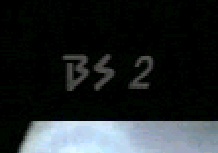
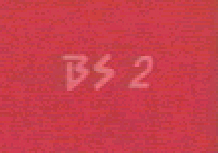
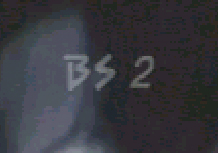
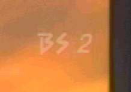
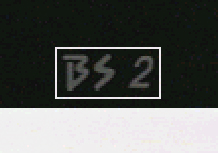
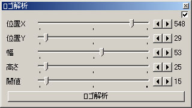
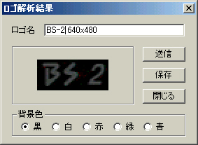

ロゴ解析プラグイン
ロゴ解析プラグインの使い方です。
[ロゴ解析プラグイン]
1. ロゴ解析に使える画像をAviUtlで読み込みます
ロゴの背景が単色の画像しかつかえません。様々な背景色の画像がないと正確に解析できません。
また、フェードなどで透明度が変化しているものは除く必要があります。
- ○このような背景が単一色の画像を全て読み込みます。
-


×背景が単一色でない画像は「選択範囲を削除」等で除いて下さい。-
このような画像が混じっていても、内部で判定して解析に使わないようにしました。(β03以降)


2. ロゴの範囲を選択します
フィルタを有効にするとマウス・トラックバーで画像範囲が選択できるようになります。
- ロゴが完全に枠の中に入るように選択します。
- 
3. ロゴ解析ボタンを押します
ボタンを押すと解析を開始します。

4. 解析完了
背景色を変更しながらプレビューを確認し、ロゴの名称を入力します。

- 送信ボタン
- 透過性ロゴフィルタに解析データを直接渡します
- 保存ボタン
- 解析データをロゴデータファイル(*.lgd)として保存します
- 閉じるボタン
- ロゴ解析結果ダイアログを閉じます。
[TOP]
[BACK]
(C)MakKi